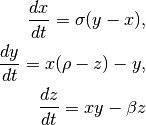
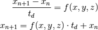

Welcome to Scientific Computing using python - mini project’s documentation!¶
Indices and tables¶
Lorenz system¶
The Lorenz system is a system of ordinary differential equations first studied by Edward Lorenz. It has chaotic solutions for certain parameter values and initial conditions. The Lorenz attractor is a set of chaotic solutions of the Lorenz system which, when plotted, resemble a butterfly or figure eight.
The lorenz equations are as follows

In order to solve the differential equations it is necessary to implement a solver for the differential equations, for which the Euler approximation for first order differential equations is selected.
It is formulated as

The same formulation is applied for the rest of the differential equations.
It should be noticed that the solution for a period of time of the lorenz attractor is very sensitive to initial conditions.
Launching the test cases for different parameters¶
Locate the terminal/ipython in the folder of cases. When running the script it will plot the different solutions and save all the figures, data and solutions to pdf and a hdf5 file.
You can run the test case 1 as
>>> python case1.py
And for test case 2
>>> python case2.py
and so on
>>> python case3.py
>>> python case4.py
>>> python case5.py
Testing the code¶
Locate the terminal/ipython in the folder of tests. You can run the tests and it will be compared to numpy ODE solver. It should be noticed that the more chaotic the system it will fail the test.
It was observed that the Euler solver carry delays to the solution than the ODE solver inside numpy.
To run the tests you can type
>>> python test.py
It will pass the first two cases and fail the three last cases, which are compared to the ODE solver of numpy.